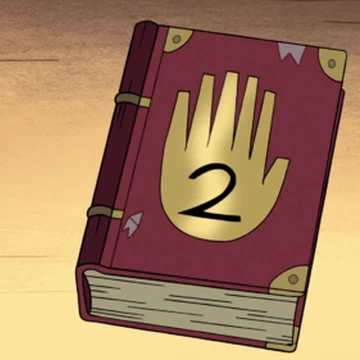

Дневники

Дневник №1 — загадочная книга, принадлежащая Стэну.
Он получил его от автора дневников - своего брата Форда.
Это первый дневник, продолжением которого является Дневник №2
(ранее принадлежащий Гидеону Глифулу) и Дневник №3
(принадлежащий Дипперу Пайнсу). Мало, что известно о его содержании.
Считалось, что он был уничтожен Биллом Шифром наряду с Дневником №2
и №3 во время Странногеддона, но после смерти Билла они были,
по всей видимости, восстановлены, и вскоре их выбросили в бездонную яму.

Дневник №2 — загадочная книга, написанная Стэнфордом Пайнсом,
и спрятанная на территории Начальной Школы Гравити Фолз,
где её много лет спустя находит Гидеон Глифул.
Это второй дневник в сериале, идущий после Дневника №1,
но и идущий перед Дневником №3,
и он содержит в себе информацию о различных сверхъестественных вещах
и чарах, которые находятся в Гравити Фолз.

Дневник № 3 — загадочная книга,
найденная Диппером Пайнсом в лесу на окраине от Гравити Фолз.
Это третья и финальная часть серии дневников Автора.
Является продолжением первого и второго дневников.
Там содержится информация о странных и загадочных
явлениях в Гравити Фолз. Считалось, что он был уничтожен
Биллом Шифром наряду с Дневником № 1 и № 2 во время Странногеддона,
но после смерти Билла они были, по всей видимости, восстановлены,
и вскоре их выбросили в бездонную яму.